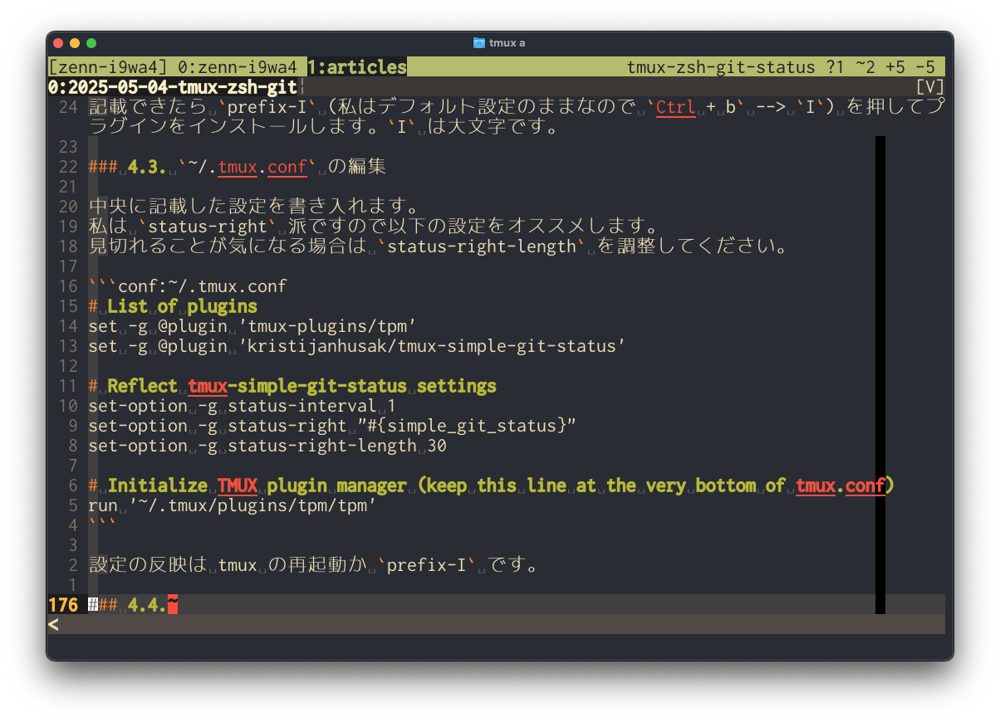
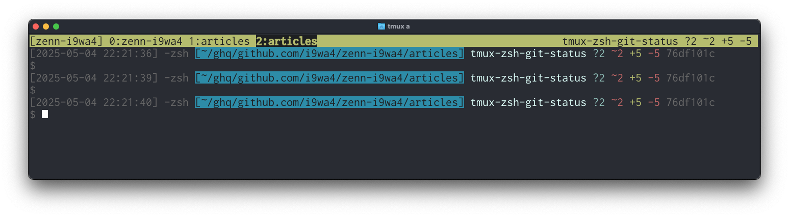

tmux と Zsh に Git リポジトリのステータスを表示する
tmux のステータスラインと Zsh プロンプトに Git リポジトリのステータスを表示させる方法を紹介します
1. はじめに
tmux / Zsh / Vim を愛用してターミナルに引き籠っている者です。
リポジトリのステータスの表示先として元々 Zsh プロンプトを活用していましたが Vim 起動中やコマンド実行中でプロンプトが見えないときにどうなっているか分からない点が以前から気になっていました。
そこで今回はその点を解消できる tmux のステータスラインを活用してみることにしました。
tmux 上の表示内容が結構気に入ったので同様の表示を Zsh プロンプトで実現する方法もついでに記載します。
2. 対象読者
- tmux ユーザー
- Zsh ユーザー
3. tmux と Zsh に表示させるリポジトリのステータスの説明
分かる方はスキップしてください。
どのステータスを表示させたいかは人によって異なると思いますが、今回は後述する tmux のプラグインの表示内容に沿って以下の情報を表示させることとしました。
3.1. ブランチ名
説明不要の重要要素。
3.2. [Untracked files] ステージングされていない新規作成ファイル数
git status で
Untracked files:
に表示されるファイル数です。
以下の実行例の場合は “1” です。
$ git status
On branch tmux-zsh-git-status
Changes not staged for commit:
(use "git add <file>..." to update what will be committed)
(use "git restore <file>..." to discard changes in working directory)
modified: ../package-lock.json
modified: ../package.json
Untracked files:
(use "git add <file>..." to include in what will be committed)
2025-05-04-tmux-zsh-git-status.md
no changes added to commit (use "git add" and/or "git commit -a")3.3. [Unstaged files] ステージングされていない変更のあるファイル数
git status で
Changes not staged for commit:
に表示されるファイル数です。
他の確認方法としては以下の行数や
$ git diff --name-only
package-lock.json
package.json以下の files changed の表示を確認する方法もあります。
$ git diff --shortstat
2 files changed, 5 insertions(+), 5 deletions(-)3.4. [Inserted lines] 追加行数
ステージングされていない変更のうち追加部分の行数です。
行数カウントは以下のように --shortstat オプションを使うと簡単にできます。
$ git diff --shortstat
2 files changed, 5 insertions(+), 5 deletions(-)3.5. [Deleted lines] 削除行数
ステージングされていない変更のうち削除部分の行数です。
↑でも表示されていますね。
4. tmux のステータスラインにリポジトリのステータスを表示する
tmux プラグインを利用して tmux のステータスラインにリポジトリのステータスを表示させます。
4.1. tpm のインストール
まずは tmux プラグインマネージャー tpm をインストールします。
https://github.com/tmux-plugins/tpm
tmux の設定ファイルがない、もしくは設定ファイルを ~/.tmux.conf に配置している方は以下のコマンドを実行してください。
git clone https://github.com/tmux-plugins/tpm ~/.tmux/plugins/tpm私自身は tmux の設定ファイルを $XDG_CONFIG_HOME/tmux/tmux.conf に配置しています。その場合は $XDG_CONFIG_HOME/tmux/plugins/tpm にクローンし、以降の手順も適宜読み替えてください。
続いて ~/.tmux.conf に以下のように記載します。 tpm を有効化させ、かつ tpm に tpm 自身を管理させる記述ですね。 run コマンドが ~/.tmux.conf の最終行になるようにしてください。
~/.tmux.conf
# List of plugins
set -g @plugin 'tmux-plugins/tpm'
# Initialize TMUX plugin manager (keep this line at the very bottom of tmux.conf)
run '~/.tmux/plugins/tpm/tpm'ここまで記載できたら tmux を再起動します。
4.2. tmux-simple-git-status のインストール
リポジトリのステータスを表示させるための以下の tmux プラグインをインストールしていきます。
https://github.com/kristijanhusak/tmux-simple-git-status
まずは ~/.tmux.conf のプラグインリストに以下のように記載します。
~/.tmux.conf
# List of plugins
set -g @plugin 'tmux-plugins/tpm'
set -g @plugin 'kristijanhusak/tmux-simple-git-status'
# Initialize TMUX plugin manager (keep this line at the very bottom of tmux.conf)
run '~/.tmux/plugins/tpm/tpm'記載できたら prefix-I (私はデフォルト設定のままなので Ctrl + b –> I) を押してプラグインをインストールします。I は大文字です。
4.3. ~/.tmux.conf の編集
中央に記載した設定を書き入れます。 私は status-right 派ですので以下の設定をオススメします。 見切れることが気になる場合は status-right-length を調整してください。
~/.tmux.conf
# List of plugins
set -g @plugin 'tmux-plugins/tpm'
set -g @plugin 'kristijanhusak/tmux-simple-git-status'
# Reflect tmux-simple-git-status settings
set-option -g status-interval 1
set-option -g status-right "#{simple_git_status}"
set-option -g status-right-length 30
# Initialize TMUX plugin manager (keep this line at the very bottom of tmux.conf)
run '~/.tmux/plugins/tpm/tpm'設定の反映は tmux の再起動か prefix-I です。
4.4. tmux への反映完了
このようにステータスライン右側にブランチ名とリポジトリのステータスが表示されるようになります。 最近ステータスラインは上側派になりました。

5. Zsh プロンプトにリポジトリのステータスを表示する
こちらは素直に ~/.zshrc に記載していきます。
5.1. ~/.zshrc の編集
おまけなので細かい説明は省略しますが、私は以下のように設定しています。
~/.zshrc
# Git
autoload -Uz add-zsh-hook
autoload -Uz vcs_info
setopt prompt_subst
zstyle ':vcs_info:*' formats "%F{#DAFFF9}%b%f %m%F{#696969}%8.8i%f"
zstyle ':vcs_info:*' actionformats '%F{red}%b|%a%f %m%F{#696969}%8.8i%f'
zstyle ':vcs_info:git:*' get-revision true
zstyle ':vcs_info:git+set-message:*' hooks \
simple-git-status
function +vi-simple-git-status() {
local untracked=$(git status --porcelain 2>/dev/null | grep -c "^??")
local unstaged=$(git diff --name-only 2>/dev/null | wc -l | tr -d ' ')
local shortstat=$(git diff --shortstat 2>/dev/null)
local insertions=0
local deletions=0
if [[ "${shortstat}" =~ '([0-9]+) insertion' ]]; then
insertions="${match[1]}"
fi
if [[ "${shortstat}" =~ '([0-9]+) deletion' ]]; then
deletions="${match[1]}"
fi
if { [[ -n "${untracked}" ]] } \
&& { [[ "${untracked}" -gt 0 ]] }; then
hook_com[misc]+="%F{cyan}?${untracked}%f "
fi
if { [[ -n "${unstaged}" ]] } \
&& { [[ "${unstaged}" -gt 0 ]] }; then
hook_com[misc]+="%F{red}~${unstaged}%f "
fi
if [[ "${insertions}" -gt 0 ]]; then
hook_com[misc]+="%F{green}+${insertions}%f "
fi
if [[ "${deletions}" -gt 0 ]]; then
hook_com[misc]+="%F{red}-${deletions}%f "
fi
}
_vcs_precmd(){ vcs_info }
add-zsh-hook precmd _vcs_precmd
# Prompt
if { [ -n "${SSH_CONNECTION}" ] } \
|| { [ -n "${SSH_TTY}" ] } \
|| { [ -n "${SSH_CLIENT}" ] }; then
# remote host
PROMPT="%K{#FFB6C1}%F{#000000}[%M]%f%k "
else
# local host
PROMPT=""
fi
_shell_type="$(ps -o comm -p $$ | tail -n 1 | sed -e 's/.*\///g')"
PROMPT="${PROMPT}%F{#696969}%D{[%Y-%m-%d %H:%M:%S]} ${_shell_type} %f%K{#198CAA}%F{black}[%~]%f%k "'${vcs_info_msg_0_}'"
%F{#696969}$%f "5.2. Zsh への反映完了
以下のように tmux のステータスラインと同じ内容を表示できます。 色はカラーコードで指定できるので好きなように設定しましょう！

6. おまけ
私の tmux.conf と .zshrc の全体は以下です。 最近まで tmux.conf はほとんど設定してなかったんですが、今回プラグインを導入してみて tmux の使用感を良くすることにもある程度注目してみてもよいなと感じました。
https://github.com/i9wa4/dotfiles/blob/5888691c07aea3a41cb44c0ec20500c8cb0c9ac2/dot.zshrc